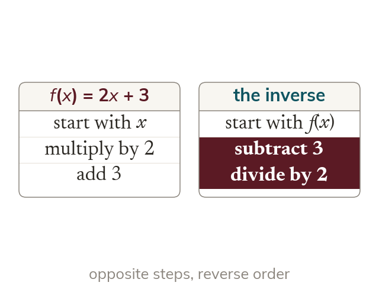

Undoing a function
An inverse function undoes the original. It applies the opposite operations in reverse order.
An inverse function undoes the original, so it applies the opposite operations in the reverse order. The function f(x) = 2x + 3 multiplies by 2 and then adds 3, so its inverse subtracts 3 and then divides by 2.